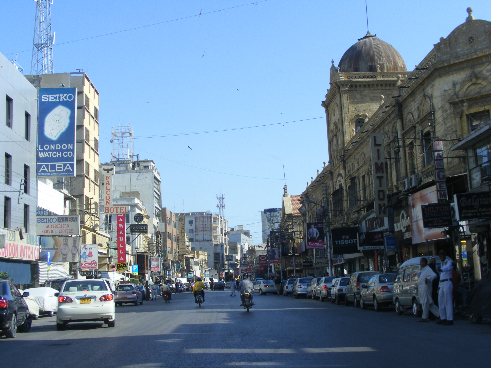

Saddar History

Saddar grew up as the main bazaar and shopping area during British rule. Today it is one of the busiest parts of Karachi, and it still holds many old buildings.
Famous Spots in Saddar
Empress Market
The most famous landmark in the area. People still go there for spices, fruit, meat and household goods.
Old Street Names
Roads here had British names in the past. Elphinstone Street is now Zebunnisa Street, and Victoria Road is now Abdullah Haroon Road.
Regal Chowk
A busy crossing named after the Regal Cinema. It is also known for its Sunday book market.